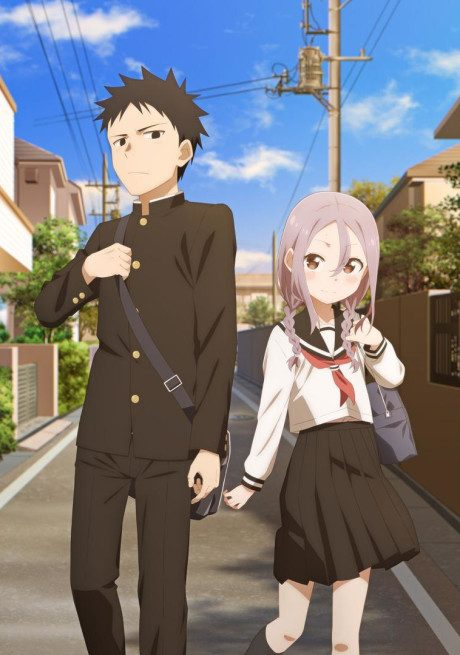
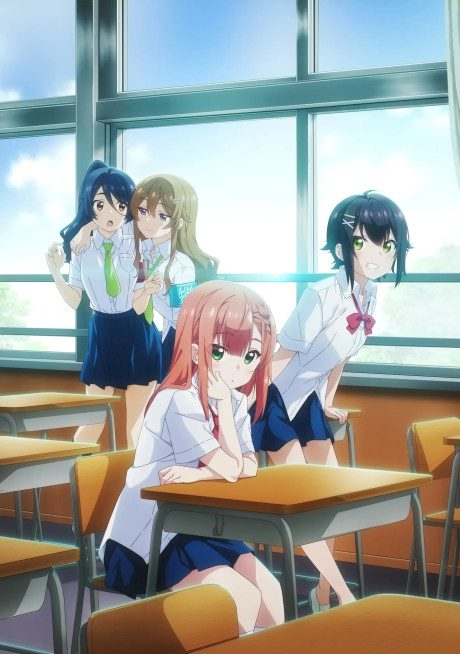

Kaguya-sama: Love Is War
The two smartest students at an elite school are in love, but both are too proud to confess, so they plot to make the other one do it first.
After the anime, read the manga from Chapter 152.
Rate it or report where you stopped
Arcs
Episodes numbered continuously as in Wikipedia's overall 'Story' column: Seasons 1-3 are 1-37, the First Kiss film's four TV parts are 38-41, and the Stairway to Adulthood special is 42-43.
Season 1: The Battle of Confessions Begins
At elite Shuchiin Academy, student council president Miyuki Shirogane and vice-president Kaguya Shinomiya like each other, but each is too proud to confess first and schemes to make the other do it.
Season 2: Love Is War?
The second term brings new rivals, a student council election, and more failed schemes.
Season 3: Ultra Romantic
As the school culture festival nears, Shirogane makes plans to finally settle things with Kaguya.
The First Kiss Never Ends
After the culture festival, Kaguya and Shirogane have to figure out what their relationship actually is.
The Stairway to Adulthood
A special that looks back on the early days of Kaguya and Shirogane's relationship.
More like Kaguya-sama: Love Is War
 Manga Vol. 47.5
Manga Vol. 47.5
 Done7.7
Done7.7
 Unclear7.9
Unclear7.9
 Manga Ch. 667.6
Manga Ch. 667.6
 Unclear7.7
Unclear7.7
 Manga Ch. 357.2
Manga Ch. 357.2
 Manga Ch. 408.4
Manga Ch. 408.4

Manga Ch. 1136.9 Unclear8.3
Unclear8.3

Manga Vol. 46.5